2720D10 SEMISHAFT WITH LEFT OR RIGHT JOINT (ONE) - R.R.
- Path
- Procedures > 27 AXLE > 2720 REAR AXLE CASING -SEMISHAFT AND DIFFERENTIAL > 2720D REAR AXLE SEMISHAFTS AND JOINTS > 2720D10 SEMISHAFT WITH LEFT OR RIGHT JOINT (ONE) - R.R.
- Kind
- repair procedure (removal / refitting; the operation number is the code)
- Applies to
- engines: 1.2 8v; all production periods
- Interactive page
- https://sloeber94.github.io/elrnDB-fPnd/en/#/169001676
Applies to: engines: 1.2 8v; all production periods
 Removing
Removing
 Refitting
RefittingPosition the vehicle on a lift.
Raise the vehicle.
Op. 4450B08 RIGHT REAR WHEEL R R
[Left or right]
1. Remove the staking from the wheel side constant velocity joint nut.
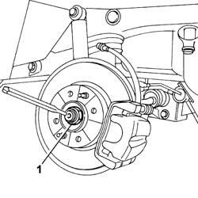
Applies to: engines: 1.2 8v; all production periods
1. Position the special tool (1a) for counter-torque and loosen the nut fixing the constant velocity joint using the spanner (1b).
Description | Code | Function | |
|---|---|---|---|
1a | Counter-torque | 1.870.815.000 | Reaction |
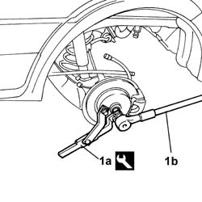
Applies to: engines: 1.2 8v; all production periods
1. Release the handbrake cable from the housing.
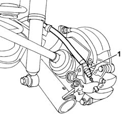
Applies to: engines: 1.2 8v; all production periods
Undo the retaining bolt and remove the ABS sensor from the wheel hub.
1. Remove the fastening clip and undo the connector (1a) and disconnect the rigid pipe (1b) from the flexible section (1c).
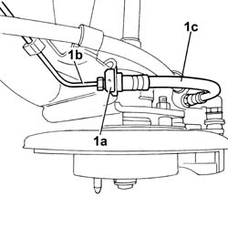
Applies to: engines: 1.2 8v; all production periods
1. Undo the upper bolt securing the rear shock absorber.
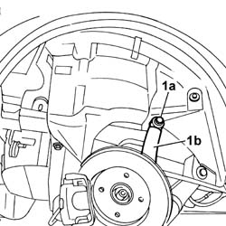
Applies to: engines: 1.2 8v; all production periods
1. Undo the wheel hub retaining nuts.
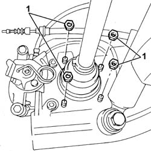
Applies to: engines: 1.2 8v; all production periods
1. Remove the wheel hub assembly.
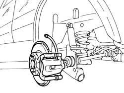
Applies to: engines: 1.2 8v; all production periods
Position a suitable container for collecting the transmission fluid.
1. Undo the plug and drain the rear differential fluid.
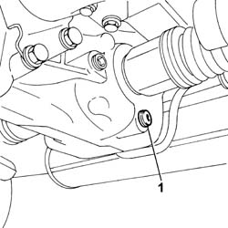
Applies to: engines: 1.2 8v; all production periods
Op. 4420C10 REAR SUSPENSION STABILIZER BAR - R+R
1. Release the driveshaft assembly from the housing and remove it.
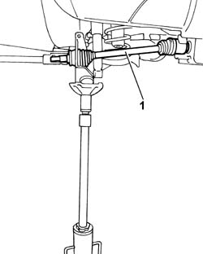
Applies to: engines: 1.2 8v; all production periods
Refitting
RemovingFit the driveshaft in place complete with joints.
Op. 4420C10 REAR SUSPENSION STABILIZER BAR - R+R
Fit the wheel hub assembly in place and tighten the fixing nuts to torque.
Tighten the shock absorber fixing bolt to torque.
Value - daNm | Fastening | Component | Ø | |
|---|---|---|---|---|
- | 7 | Bolt | - | M10 X 1.25 |
Place the ABS sensor in position and tighten the fixing bolt.
Tighten the connector between the flexible oil pipe and the rigid oil pipe renewing the retaining clip.
Fit the handbrake cable in place.
Position the special tool for counter-torque and tighten the nut fixing the constant velocity joint to the recommended torque pre-tightening it first.
Description | Code | Function | |
|---|---|---|---|
- | Counter-torque | 1.870.815.000 | Reaction |
Value - daNm | Fastening | Component | Ø | |
|---|---|---|---|---|
- | 7 | Nut | - | M22 |
Value - daNm | Fastening | Component | Ø | |
|---|---|---|---|---|
- | 20 | Nut | - | M22 |
1. Stake the constant velocity joint side nut.
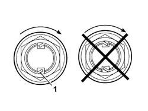
Applies to: engines: 1.2 8v; all production periods
1. Undo the cap and top up the differential fluid level.
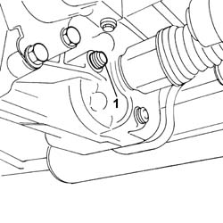
Applies to: engines: 1.2 8v; all production periods
Top up the brake fluid level and bleed the system.
Op. 4450B08 RIGHT REAR WHEEL R R
[Left or right]
Remove the vehicle from the lift.